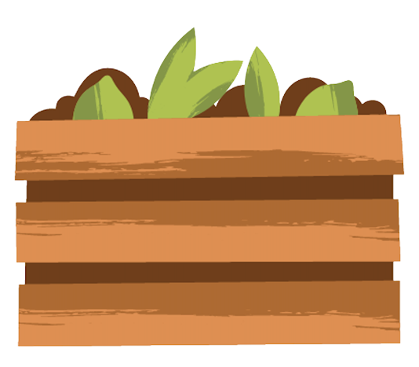
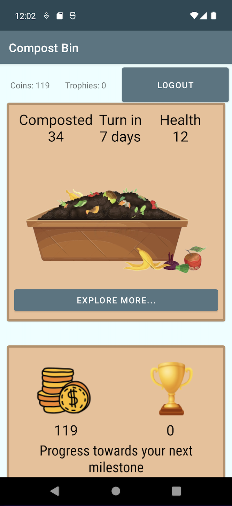
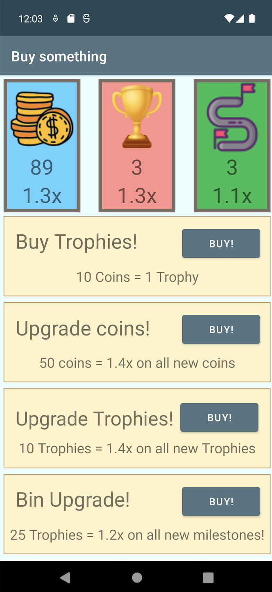

|  | Composting Pal |
| External link to .apk: Github link to .apk: |
|
| External link to source zip: | |
| Composting Pal is an easy, quick, fast way to jump right into the world of composting! This app allows users to keep track of what they can compost, how often they can do so, and invites awards and challenges along the way with your composting journey! With one tap, Composting pal can keep track of how well you are composting and give you feedback on your progress. Composing Pal even ties in with native Android environment features to ensure a smooth experience! Download Composing Pal with the links provided to get started! | Screenshots |
|  |  |
| External link to YouTube video | |
| List of external libraries:
com.google.firebase.database, com.google.android.material.card.MaterialCardView, com.canva/design, com.google.firebase.auth.FirebaseAuth, androidx.recyclerview.widget.RecyclerView,
kotlin.collections.HashMap, kotlin.collections.ArrayList
Code used in this project: FirebaseEmailAuthExample, FirebaseRealtimeDatabaseExample, NotificationSnackbar |
|